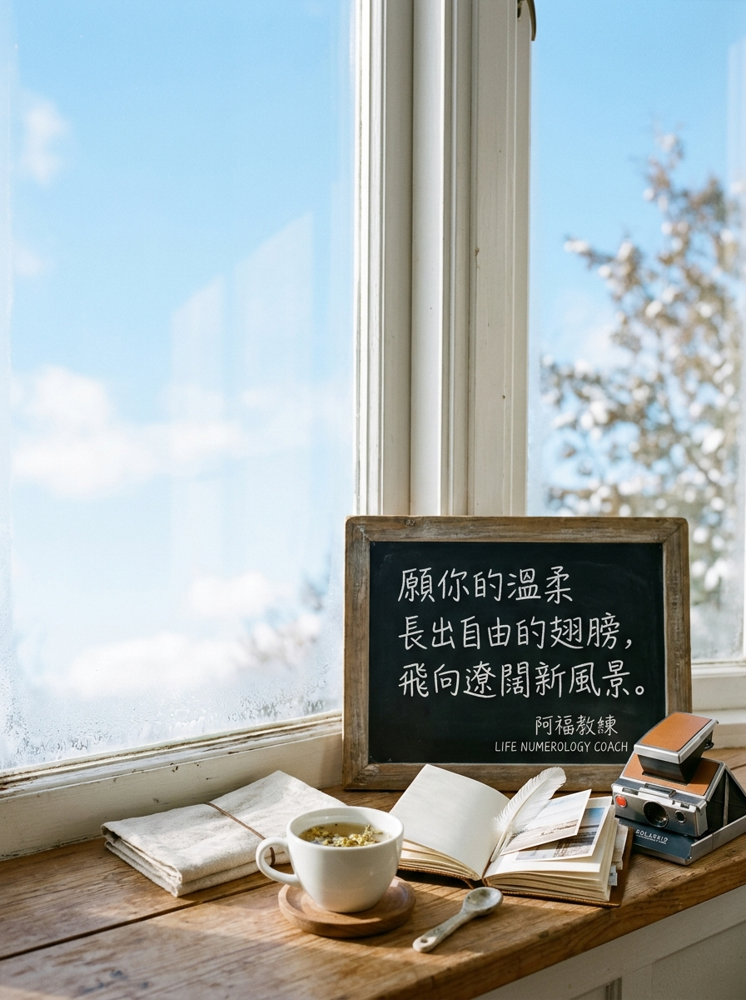

NOVEMBER 20 · GENTLE EMPATHY & FREE WINGS
11/20 壽星
生日快樂
「願你的溫柔長出翅膀，自在飛向心之所向的風景。」
生日數 20（內2 外0 合2：溫柔・體貼・共感）
2026 流年 5（自由・探索・突破・冒險）
生日數能量：溫柔・體貼・協調・共感
流年 5 主題：自由・探索・突破・冒險
A YEAR OF LIBERATION & JOYFUL ADVENTURE
放下迎合他人的過度顧慮，讓純粹溫柔的心自在展翅翱翔
迎向 2026 流年 5 的自由突破大年，宇宙想送給最溫柔細膩的 20/2 號人一雙輕盈的翅膀：身為外在0放大內在2能量、純粹善解人意的壽星，你總是習慣傾聽配合、把別人的感受擺在自己前面；然而今年宇宙給你的課題是「勇敢做自己、痛快去探索」！不要因為怕別人失望而委屈自己留在原地，給自己一次任性出走的特權。去旅行、去學新才藝、去認識新朋友，當你的溫柔注入了自由的風，你將活出前所未有的迷人光彩。
年度提問｜「如果完全不被別人的期待限制，我現在最想嘗試的一場自由體驗是什麼？」
YOUR ENERGY DJ · 2 號人的流年 5 展翅點播站
當細膩體貼的 20/2 溫柔，走進無拘無束的流年 5
身為天生溫和、懂得成就他人的 2 號壽星，走進「流年 5」的探險地圖，今年輪到你當自己生命的主角！今天 DJ 特別為你調配流年 5 自由展翅歌單——吹散猶豫與顧慮，帶你飛向遼闊未知的全新風景！
LIFE NUMBER 5 · CLASSROOM PLAYLIST
5 號人課堂激勵與歡唱歌單（給 2 號人的流年 5 能量歌單）
這份歌單來自阿福教練生命靈數課堂中，專為流年 5 主題（自由・探索・突破・冒險）所調配的經典曲目。點擊任一曲目即可開啟 YouTube 搜尋聆聽，陪伴你在新的一歲調頻對齊、綻放光芒！
- 01自由張震嶽｜主題開場・直接呼應自由與選擇，激勵大膽做出突破決定（YouTube 搜尋）
- 02離開地球表面五月天｜高能量帶動・以跳躍感拉高冒險熱情，打破沉悶框架（YouTube 搜尋）
- 03100種生活盧廣仲｜探索想像・思考人生的多種可能，放大心靈好奇心（YouTube 搜尋）
- 04你是我的花朵伍佰｜社交歡唱・熱情互動節奏，放大親和力與共鳴感染力（YouTube 搜尋）
- 05狂熱蘇打綠｜勇敢嘗試・將探索冒險導入熱情投入，享受全心投入的快感（YouTube 搜尋）
- 06快樂崇拜潘瑋柏｜節奏互動・輕鬆歡快的社交節奏，大膽表達自我與釋放活力（YouTube 搜尋）
- 07稻香周杰倫｜回到核心・提醒在自由探索之際，依然看見最純粹重要的初心（YouTube 搜尋）
- 08我的未來不是夢張雨生｜承諾收束・把探索體驗轉化為前進動力，堅定邁向精彩未來（YouTube 搜尋）
歌單依《生命靈數5號人_激勵九首與歡唱點播歌單》整理。點播連結均為 YouTube 官方影音搜尋結果；播放時請依授課場地與著作權規範使用。
願你的細膩被世界溫柔擁抱，帶著好奇與勇氣自在展翅，遇見更寬廣精彩的自己。
👉 11/20 壽星快來留言【🕊️】！為新的一歲許下最棒的心願！
#11月20日生日快樂 #生命靈數 #生日數20 #生日數2 #流年5 #自由展翅 #跨出舒適圈 #阿福教練